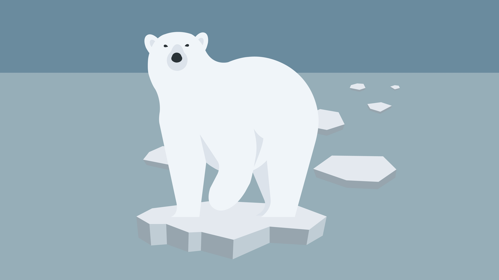
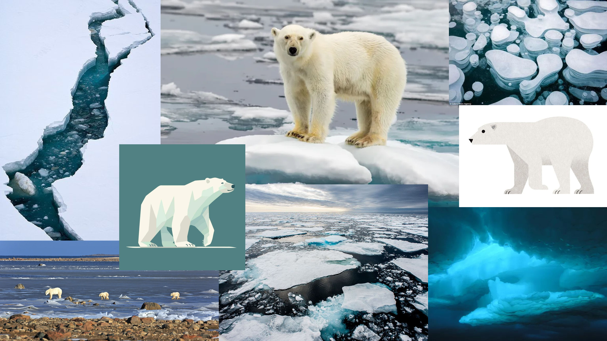
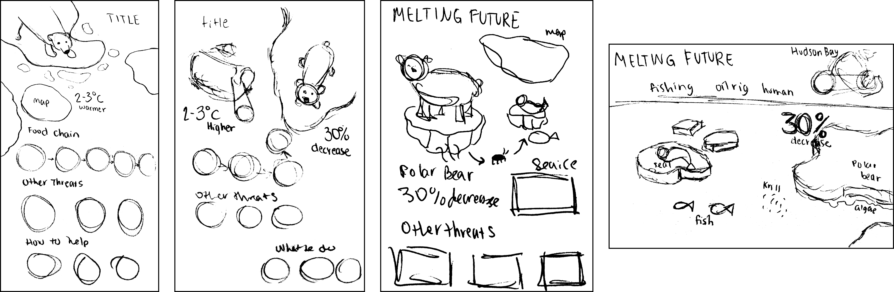
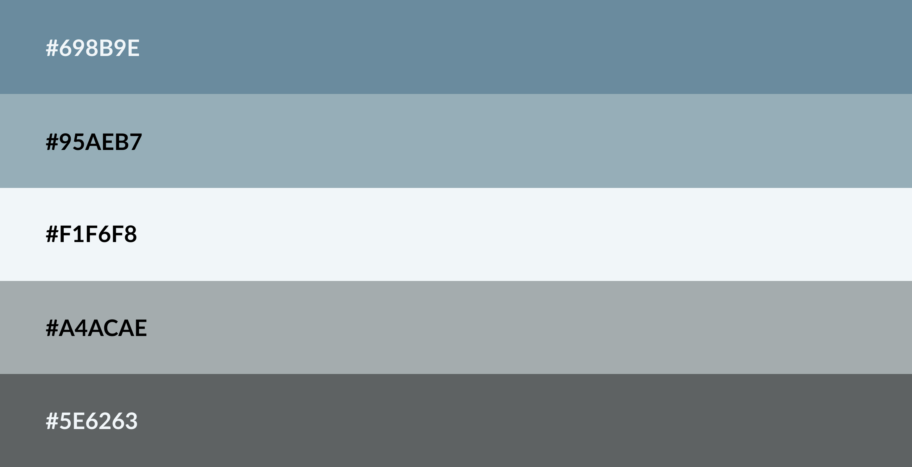
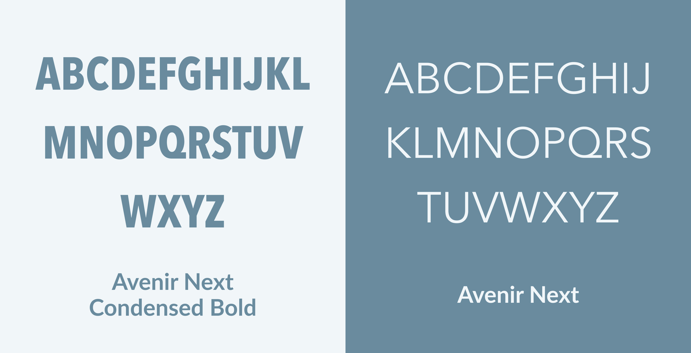
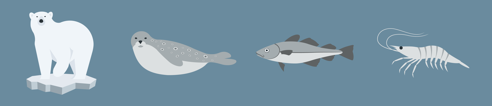
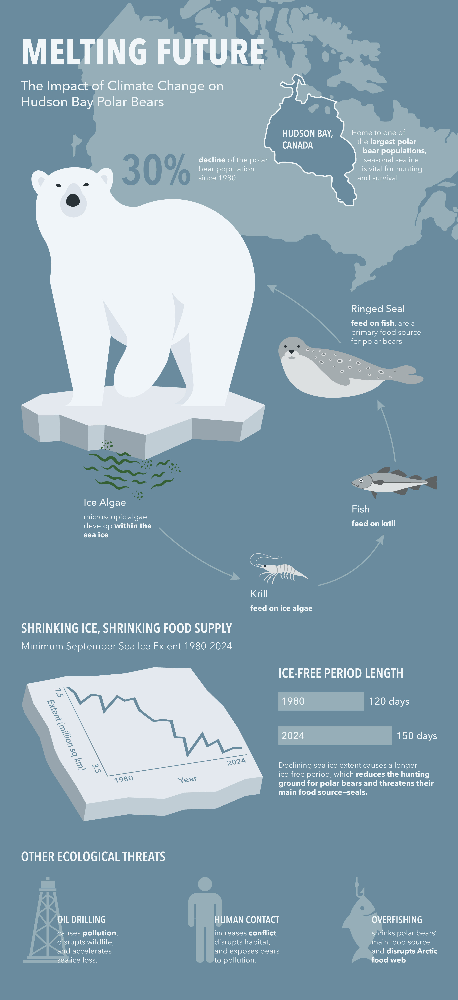

Sketches
After researching, I sketched out ideas for the infographic and tested different ways of laying out and visualizing the information.

Design an information graphic that utilizes various design systems about a topic in the natural sciences.
This infographic explains the impact that climate change has on polar bears, including their food sources, hunting habits, habitat, and population. It is specifically about polar bears located in Hudson Bay, Canada. The purpose is to inform the viewer who is ready to form an opinion.

After researching, I sketched out ideas for the infographic and tested different ways of laying out and visualizing the information.

The icy and moderate-to-low contrast palette creates a fading effect, symbolizing something disappearing. I also created icons and graphics as visual cues.



